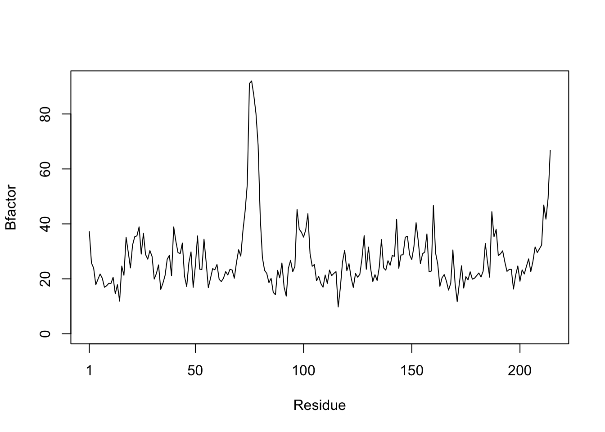

library("bio3d")Class06 HW: Writing Functions
First, one must call up the package. we want to use.
Q1. What type of object is returned from the read.pdb() function?
s1 <- read.pdb("4AKE") # kinase with drug Note: Accessing on-line PDB files1
Call: read.pdb(file = "4AKE")
Total Models#: 1
Total Atoms#: 3459, XYZs#: 10377 Chains#: 2 (values: A B)
Protein Atoms#: 3312 (residues/Calpha atoms#: 428)
Nucleic acid Atoms#: 0 (residues/phosphate atoms#: 0)
Non-protein/nucleic Atoms#: 147 (residues: 147)
Non-protein/nucleic resid values: [ HOH (147) ]
Protein sequence:
MRIILLGAPGAGKGTQAQFIMEKYGIPQISTGDMLRAAVKSGSELGKQAKDIMDAGKLVT
DELVIALVKERIAQEDCRNGFLLDGFPRTIPQADAMKEAGINVDYVLEFDVPDELIVDRI
VGRRVHAPSGRVYHVKFNPPKVEGKDDVTGEELTTRKDDQEETVRKRLVEYHQMTAPLIG
YYSKEAEAGNTKYAKVDGTKPVAEVRADLEKILGMRIILLGAPGA...<cut>...KILG
+ attr: atom, xyz, seqres, helix, sheet,
calpha, remark, callAs we can see, the s1, s2 and s3 code each access pdb files from “bio3d” for different protein sequences.
s2 <- read.pdb("1AKE") # kinase no drug Note: Accessing on-line PDB file
PDB has ALT records, taking A only, rm.alt=TRUEs3 <- read.pdb("1E4Y") # kinase with drug Note: Accessing on-line PDB fileattributes(s1)$names
[1] "atom" "xyz" "seqres" "helix" "sheet" "calpha" "remark" "call"
$class
[1] "pdb" "sse"Q2. What does the trim.pdb() function do?
s1.chainA <- trim.pdb(s1, chain="A", elety="CA")
s1.chainA
Call: trim.pdb(pdb = s1, chain = "A", elety = "CA")
Total Models#: 1
Total Atoms#: 214, XYZs#: 642 Chains#: 1 (values: A)
Protein Atoms#: 214 (residues/Calpha atoms#: 214)
Nucleic acid Atoms#: 0 (residues/phosphate atoms#: 0)
Non-protein/nucleic Atoms#: 0 (residues: 0)
Non-protein/nucleic resid values: [ none ]
Protein sequence:
MRIILLGAPGAGKGTQAQFIMEKYGIPQISTGDMLRAAVKSGSELGKQAKDIMDAGKLVT
DELVIALVKERIAQEDCRNGFLLDGFPRTIPQADAMKEAGINVDYVLEFDVPDELIVDRI
VGRRVHAPSGRVYHVKFNPPKVEGKDDVTGEELTTRKDDQEETVRKRLVEYHQMTAPLIG
YYSKEAEAGNTKYAKVDGTKPVAEVRADLEKILG
+ attr: atom, helix, sheet, seqres, xyz,
calpha, callAfter running the code and looking at the help page, the trim.pdb function trims a pdb object to a subset.
First Argument: pdb (the file download, in this case s1)
Second Argument: “chain” (specifies the subset to keep, in this case chain A instead of B)
Third Argument: “elety” (specifies atom type -in this case CA = calpha which are protein atoms)
Repeat with s2 and s3:
s2.chainA <- trim.pdb(s2, chain="A", elety="CA")
s3.chainA <- trim.pdb(s3, chain="A", elety="CA")s1.b <- s1.chainA$atom$b
s1.b [1] 29.02 18.44 16.20 19.67 20.26 20.55 17.05 22.13 26.71 33.05
[11] 30.66 32.73 25.61 33.19 41.03 24.09 16.18 19.14 29.19 14.79
[21] 19.63 28.54 27.49 32.56 17.13 15.50 6.98 24.07 24.00 23.94
[31] 30.70 24.70 32.84 34.60 33.01 44.60 50.74 57.32 47.04 67.13
[41] 81.04 75.20 59.68 55.63 45.12 39.04 44.31 38.21 43.70 44.19
[51] 47.00 48.67 41.54 50.22 45.07 49.77 52.04 44.82 39.75 35.79
[61] 38.92 37.93 27.18 26.86 27.53 31.16 27.08 23.03 28.12 24.78
[71] 24.22 18.69 40.67 38.08 55.26 46.29 26.25 37.14 27.50 16.86
[81] 27.76 19.27 22.22 26.70 25.52 21.22 15.90 15.84 22.44 19.61
[91] 21.23 21.79 17.64 22.19 22.73 16.80 23.25 35.95 24.42 20.96
[101] 20.00 25.99 24.39 17.19 12.16 17.35 24.97 14.08 22.01 22.26
[111] 22.78 27.47 30.49 32.02 20.90 27.03 23.84 44.37 42.47 33.48
[121] 44.56 56.67 60.18 66.62 59.95 70.81 88.63 100.11 86.60 85.80
[131] 77.48 68.13 52.66 45.34 52.43 60.90 62.64 72.19 66.75 58.73
[141] 74.57 79.29 79.53 76.58 66.40 64.76 70.48 74.84 70.11 74.82
[151] 78.61 78.24 66.70 66.10 67.01 72.28 80.64 68.54 43.23 51.24
[161] 45.72 61.60 45.61 42.57 41.03 41.02 33.34 19.48 34.38 33.11
[171] 25.48 29.68 40.71 32.91 24.41 19.20 15.43 19.93 20.66 12.72
[181] 21.40 18.21 26.68 34.50 25.77 26.52 36.85 31.05 39.84 48.03
[191] 23.04 29.57 23.00 23.80 26.59 25.49 23.25 19.89 32.37 30.97
[201] 42.16 29.64 29.69 33.15 26.38 23.17 29.35 32.80 25.92 38.01
[211] 45.95 44.26 44.35 70.26The ‘atom’ attribute is a data frame with atom coordinate data and ‘atom$b’ specifies the atom mobility (bfactor).
s2.b <- s2.chainA$atom$b
s3.b <- s3.chainA$atom$bplotb3(s1.b, sse=s1.chainA, typ="l", ylab="Bfactor")
plotb3(s2.b, sse=s2.chainA, typ="l", ylab="Bfactor") 
plotb3(s3.b, sse=s3.chainA, typ="l", ylab="Bfactor")
Q3. What input parameter would turn off the marginal black and grey rectangles in the plots and what do they represent in this case?
The ‘plotb3()’ function creates a scatterplot with “secondary structure in marginal regions” (so it places the rectangles in the top and bottom).
The first argument specifies the object to be plotted (in this case s1.b )
The second argument is sse, which specifies secondary structure elements (dark grey is alpha helices and light grey is beta sheets)
The third argument is type, which specifies the type of plot (‘l’ denotes line)
The fourth argument is ylab, which labels the y axis
To turn off the rectangles (which represent secondary structures of the proteins), we should only need to modify the sse:
plotb3(s1.b, typ="l", ylab="Bfactor") It worked, so let’s repeat with the other two objects.
plotb3(s2.b, typ="l", ylab="Bfactor")
plotb3(s3.b, typ="l", ylab="Bfactor")
Q4. What would be a better plot to compare across the different proteins?
An RMSD dendogram would better compare the three protein structures.
Q5. Which proteins are more similar to each other in their B-factor trends. How could you quantify this? HINT: try the rbind(), dist() and hclust() functions together with a resulting dendrogram plot. Look up the documentation to see what each of these functions does.
‘rbind()’: combines R objects by rows
‘dist()’: calculates the distance between rows of a data matrix
‘hclust()’: groups objects by clusters to compare them
hc <- hclust(dist(rbind(s1.b, s2.b, s3.b)))
plot(hc)
The s2.b and s3.b proteins are most similar to one another ( the kinase with a drug and kinase without a drug)
Q6. How would you generalize the original code above to work with any set of input protein structures?
Write your own function starting from the code above that analyzes protein drug interactions by reading in any protein PDB data and outputs a plot for the specified protein.
Here is each step of the original code:
s1 <- read.pdb("4AKE") # kinase with drug Note: Accessing on-line PDB fileWarning in get.pdb(file, path = tempdir(), verbose =
FALSE): /var/folders/3x/mzcw4qf15js3hq77vwbkv4b40000gp/T//RtmpA8iEvI/4AKE.pdb
exists. Skipping downloads1.chainA <- trim.pdb(s1, chain="A", elety="CA")
s1.b <- s1.chainA$atom$b
plotb3(s1.b, sse=s1.chainA, typ="l", ylab="Bfactor") 
Here is the original code nested within each other:
plotb3(trim.pdb(read.pdb("4AKE"), chain="A", elety="CA")$atom$b, sse=s1.chainA, typ="l", ylab="Bfactor") Note: Accessing on-line PDB fileWarning in get.pdb(file, path = tempdir(), verbose =
FALSE): /var/folders/3x/mzcw4qf15js3hq77vwbkv4b40000gp/T//RtmpA8iEvI/4AKE.pdb
exists. Skipping download
This is a nesting of the modified code to compare the three protein sequences: (my original mistake when starting to create the function)
plot(hclust( dist(
rbind(
trim.pdb(read.pdb("4AKE"), chain="A", elety="CA")$atom$b, trim.pdb(read.pdb("1AKE") , chain="A", elety="CA")$atom$b, trim.pdb(read.pdb("1E4Y") , chain="A", elety="CA")$atom$b) ) )) Note: Accessing on-line PDB fileWarning in get.pdb(file, path = tempdir(), verbose =
FALSE): /var/folders/3x/mzcw4qf15js3hq77vwbkv4b40000gp/T//RtmpA8iEvI/4AKE.pdb
exists. Skipping download Note: Accessing on-line PDB fileWarning in get.pdb(file, path = tempdir(), verbose =
FALSE): /var/folders/3x/mzcw4qf15js3hq77vwbkv4b40000gp/T//RtmpA8iEvI/1AKE.pdb
exists. Skipping download PDB has ALT records, taking A only, rm.alt=TRUE
Note: Accessing on-line PDB fileWarning in get.pdb(file, path = tempdir(), verbose =
FALSE): /var/folders/3x/mzcw4qf15js3hq77vwbkv4b40000gp/T//RtmpA8iEvI/1E4Y.pdb
exists. Skipping downloadplot_pseq <- function(x) { plotb3( trim.pdb( read.pdb(x), chain="A", elety="CA")$atom$b, sse=s1.chainA, typ="l", ylab="Bfactor")
}Don’t run function code – need to fix more. Need to review function format again
The only function input is the pdb file.
The output of the function is a plot.
The function takes the given file and plots the bfactor against the residues to view the atom mobility of different areas of hte protein.